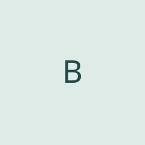
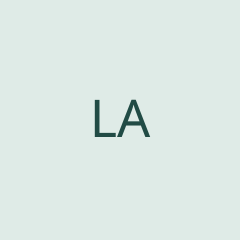

Biên
Socket & vận hành server
Chưa thêm ảnh thật và thông tin cá nhân.
LẬP TRÌNH MẠNG · HTTP/1.0
Biên · Bảo · Việt An · Lê An

Socket & vận hành server
Chưa thêm ảnh thật và thông tin cá nhân.

Phân tích HTTP request
Chưa thêm ảnh thật và thông tin cá nhân.
HTTP response & tài nguyên
Chưa thêm ảnh thật và thông tin cá nhân.

CGI, log & kiểm thử
Chưa thêm ảnh thật và thông tin cá nhân.